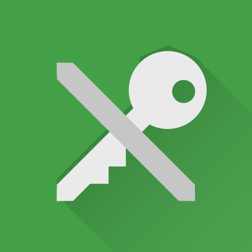

讓密碼管理器幫你記住密碼
noarch 在帳號安全：保護，隔離，整理中提到了，絕對不要在兩個不同服務中使用相同的密碼。
同時，noarch 也解釋了原因：如果你在多個服務使用相同密碼，而其中一個被駭或是被搜查，那麼你所有使用相同密碼的服務都將受威脅。
你可能會想，
這根本不可能啊！我在這麼多服務上有賬戶，記住幾百上千個強密碼，你是要把我訓練成最強大腦麼？
你還可能會遇到一些要求刁鑽的服務，它們為了“保證賬戶安全”，要求特定的密碼強度：
例如要求數字、大小寫字母、特殊符號必須全有，長度不低於 15...
這時，你可能就犯難了，因為你平時使用的密碼不滿足這個要求。於是你臨時想了一個密碼，並把它用紙筆記錄起來，或用手機的備忘錄儲存。而你用手機備忘錄儲存的密碼被同步到手機廠商的“雲端”，安全性未知...
密碼本不應這麼麻煩。
你可能想過把你用來寫密碼的記事本轉換成自動同步、端到端加密、自動填寫的“電子密碼保險箱”，這樣你就不用為丟失記事本、記事本被偷看、或是忘記密碼的問題了...
密碼管理器就是你想要的。它們專門用來儲存登入資訊，就是你的“電子密碼保險箱”。
密碼管理器做什麼
基本結構
前面 noarch 提到了，密碼管理器可以自動同步、使用端到端加密、支援自動填寫（或複製密碼）...
如果你還是對“密碼管理器”的概念發懵，noarch 進一步解釋一下：
想象密碼管理器是一個專門用來存放鑰匙的保險箱。
在這個資料庫或電子表格中，每個帳號是一把鑰匙，包含該帳號的服務、使用者名稱和密碼。
如果你想要儲存更多東西，比如用於安全驗證的問題或恢復郵箱，你也可以為每項新增筆記，也就是把一個牌子拴在鑰匙上。
你還可以進一步為帳號分類，例如這些帳號屬於一個身份，另外一些帳號屬於另一個身份... 你不用擔心把你所有身份都放在一個密碼管理器裡，因為它的加密足夠安全。
生成密碼
當你在某個服務建立帳號，或是為帳號改密碼時，密碼管理器可以幫你生成一個隨機的密碼，就像這樣：
QKZiZF3r34!m%@HHGMTe
然後你可以將它自動填寫，或是複製貼上到對應的服務中。
讀取密碼
當你要登入一個帳號時，你可以進入密碼管理器，然後一鍵複製這個帳號的密碼，並貼上進登入框。
密碼管理器的加密
在使用密碼管理器後，你只需要記住一個密碼：它就是密碼管理器的“主密碼”。
就像你將一圈鑰匙存放在保險箱，你依然需要隨身帶著一把鑰匙。顯然，帶著一把鑰匙比一圈鑰匙容易。
不過這一把鑰匙一定要足夠強：無論保險箱的鎖芯多麼難以擊破，如果你使用完全沒有打磨過的模板鑰匙（弱密碼），那麼竊賊可以輕易造出同樣的鑰匙。
什麼絕對不是“密碼管理器”
你可能之前認為把密碼記在紙質記事本上就是“密碼管理”了。不過你有沒有想過如下的問題：
-
如果記事本丟失，你將如何找回密碼？
-
如果你被搜查，你將如何隱藏這個記事本？
-
如果輸入密碼的裝置有硬體級別的鍵盤記錄器，它是否能抓取你的密碼？
-
你真的能保證密碼之間沒有關聯嗎？例如一個服務上用
Password另外一個用Pa5svv0Rd, 拋開它們都是弱密碼之外，這些都是容易被猜測的聯絡
看了如上，你可能會想，我用電子記事本就沒關係了嘛。更多的問題來了：
-
這個記事本是否加密？如果你用於儲存該記事本的裝置被偷，裡面的內容會不會全盤暴露？
-
這個記事本是否雲端同步？如果雲端同步，“雲端”如何處理你的資料？
-
你依然沒有可靠的方法生成高強度密碼。
同樣，一些自稱為“安全”的“密碼管理”方式其實不安全。
它們偽裝成“密碼管理器”，但不安全
Chrome / Chromium / Firefox 儲存密碼
理由：它們雲端同步，並且不使用零訪問的端到端加密。
如果雲端同步不使用零訪問端到端加密，那麼政府 - 有可能是你的敵人 - 將有機會向“雲端”請求你的資料。
iCloud Keychain
理由：它雲端同步，並且不使用零訪問的端到端加密；在中國境內伺服器儲存資料。
除了不使用零訪問端到端加密之外，iCloud 從 2018 年起將中國區的資料交由雲上貴州儲存。中國政府將能夠隨意訪問你儲存在那的密碼。
真正的密碼管理器
noarch 認為一個真正的密碼管理器應當不雲端同步，如果雲端同步，應當零訪問。同時，加密方式也應經受密碼學考驗。同時，它應該是自由軟體。
[Desktop/All] KeepassXC
它是 Keepass 的 C++ & Qt 重寫，使用 AES-256 或 Twofish 加密密碼資料庫。
KeepassXC 還可以生成二步驗證碼，使你不需要分別使用二步驗證器。
它不自帶雲端同步，但你可以手動將密碼資料庫放在例如 Dropbox 或 Onedrive 的雲端儲存中，而不用擔心資料庫被訪問。
[Android] KeepassDX
它是 Keepass 的 Android 實現，使用和 KeepassXC 一樣強的加密，相容 KeepassXC 的資料庫，同樣不具備雲端同步整合。
和 KeepassXC 一樣，它也可以生成二步驗證碼。
[Web] Bitwarden
自帶雲端同步，使用 AES-256 加密的密碼管理器；密碼資料庫僅在客戶端解密。
Bitwarden 官方提供雲端儲存，但 Bitwarden 服務端同樣是自由的，因此你可以自己搭建 Bitwarden 伺服器。
Bitwarden 免費版擁有無限量密碼儲存，但需要付費使用二步驗證碼功能。